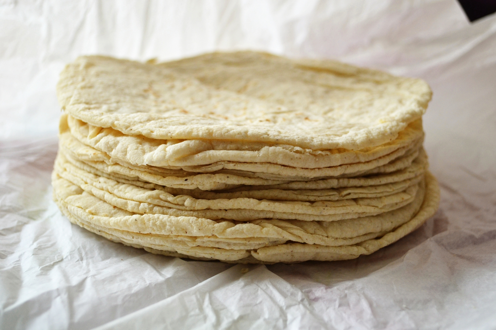

Accueil
Tortillas Maison

Les tortillas sont des galettes de maïs ou de blé, très populaires dans la cuisine mexicaine. Elles sont utilisées pour préparer des tacos, burritos, enchiladas et bien d'autres plats. Faire ses propres tortillas maison permet de savourer leur goût authentique et de les adapter à vos préférences.
Ingrédients pour 8 tortillas
- 2 tasses de farine de maïs (masa harina) ou de farine de blé
- 1/2 cuillère à café de sel
- 1/2 tasse d'eau tiède (ajuster selon la consistance)
- Un peu d'huile pour la cuisson (facultatif)
Préparation
- Mélangez la farine et le sel dans un grand bol.
- Ajoutez progressivement l'eau tiède en pétrissant jusqu'à obtenir une pâte souple et homogène.
- Divisez la pâte en 8 boules égales.
- Étalez chaque boule entre deux feuilles de plastique ou avec un rouleau à pâtisserie pour former des galettes fines.
- Faites chauffer une poêle antiadhésive à feu moyen. Cuisez chaque tortilla pendant environ 30 secondes de chaque côté, jusqu'à ce qu'elles soient légèrement dorées.
- Gardez les tortillas au chaud dans un torchon propre jusqu'au moment de servir.